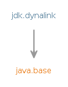

Module jdk.dynalink
Dynalink is a library for dynamic linking of high-level operations on objects. These operations include "read a property", "write a property", "invoke a function" and so on. Dynalink is primarily useful for implementing programming languages where at least some expressions have dynamic types (that is, types that can not be decided statically), and the operations on dynamic types are expressed as call sites. These call sites will be linked to appropriate target method handles at run time based on actual types of the values the expressions evaluated to. These can change between invocations, necessitating relinking the call site multiple times to accommodate new types; Dynalink handles all that and more.
Dynalink supports implementation of programming languages with object models that differ (even radically) from the JVM's class-based model and have their custom type conversions.
Dynalink is closely related to, and relies on, the java.lang.invoke
package.
While java.lang.invoke provides a low level API for dynamic linking
of invokedynamic call sites, it does not provide a way to express
higher level operations on objects, nor methods that implement them. These
operations are the usual ones in object-oriented environments: property
access, access of elements of collections, invocation of methods and
constructors (potentially with multiple dispatch, e.g. link- and run-time
equivalents of Java overloaded method resolution). These are all functions
that are normally desired in a language on the JVM. If a language is
statically typed and its type system matches that of the JVM, it can
accomplish this with use of the usual invocation, field access, etc.
instructions (e.g. invokevirtual, getfield). However, if the
language is dynamic (hence, types of some expressions are not known until
evaluated at run time), or its object model or type system don't match
closely that of the JVM, then it should use invokedynamic call sites
instead and let Dynalink manage them.
Example
Dynalink is probably best explained by an example showing its use. Let's suppose you have a program in a language where you don't have to declare the type of an object and you want to access a property on it:var color = obj.color;If you generated a Java class to represent the above one-line program, its bytecode would look something like this:
aload 2 // load "obj" on stack invokedynamic "GET:PROPERTY:color"(Object)Object // invoke property getter on object of unknown type astore 3 // store the return value into local variable "color"In order to link the
invokedynamic instruction, we need a bootstrap
method. A minimalist bootstrap method with Dynalink could look like this:
import java.lang.invoke.*;
import jdk.dynalink.*;
import jdk.dynalink.support.*;
class MyLanguageRuntime {
private static final DynamicLinker dynamicLinker = new DynamicLinkerFactory().createLinker();
public static CallSite bootstrap(MethodHandles.Lookup lookup, String name, MethodType type) {
return dynamicLinker.link(
new SimpleRelinkableCallSite(
new CallSiteDescriptor(lookup, parseOperation(name), type)));
}
private static Operation parseOperation(String name) {
...
}
}
There are several objects of significance in the above code snippet:
DynamicLinkeris the main object in Dynalink, it coordinates the linking of call sites to method handles that implement the operations named in them. It is configured and created using aDynamicLinkerFactory.- When the bootstrap method is invoked, it needs to create a
CallSiteobject. In Dynalink, these call sites need to additionally implement theRelinkableCallSiteinterface. "Relinkable" here alludes to the fact that if the call site encounters objects of different types at run time, its target will be changed to a method handle that can perform the operation on the newly encountered type.SimpleRelinkableCallSiteandChainedCallSite(not used in the above example) are two implementations already provided by the library. - Dynalink uses
CallSiteDescriptorobjects to preserve the parameters to the bootstrap method: the lookup and the method type, as it will need them whenever it needs to relink a call site. - Dynalink uses
Operationobjects to express dynamic operations. It does not prescribe how would you encode the operations in your call site, though. That is why in the above example theparseOperationfunction is left empty, and you would be expected to provide the code to parse the string"GET:PROPERTY:color"in the call site's name into a named property getter operation object asStandardOperation.GET.withNamespace(StandardNamespace.PROPERTY).named("color").
What can you already do with the above setup? DynamicLinkerFactory
by default creates a DynamicLinker that can link Java objects with the
usual Java semantics. If you have these three simple classes:
public class A {
public String color;
public A(String color) { this.color = color; }
}
public class B {
private String color;
public B(String color) { this.color = color; }
public String getColor() { return color; }
}
public class C {
private int color;
public C(int color) { this.color = color; }
public int getColor() { return color; }
}
and you somehow create their instances and pass them to your call site in your
programming language:
for each(var obj in [new A("red"), new B("green"), new C(0x0000ff)]) {
print(obj.color);
}
then on first invocation, Dynalink will link the .color getter
operation to a field getter for A.color, on second invocation it will
relink it to B.getColor() returning a String, and finally on
third invocation it will relink it to C.getColor() returning an int.
The SimpleRelinkableCallSite we used above only remembers the linkage
for the last encountered type (it implements what is known as a monomorphic
inline cache). Another already provided implementation,
ChainedCallSite will remember linkages for
several different types (it is a polymorphic inline cache) and is
probably a better choice in serious applications.
Dynalink and bytecode creation
CallSite objects are usually created as part of bootstrapping
invokedynamic instructions in bytecode. Hence, Dynalink is typically
used as part of language runtimes that compile programs into Java
.class bytecode format. Dynalink does not address the aspects of
either creating bytecode classes or loading them into the JVM. That said,
Dynalink can also be used without bytecode compilation (e.g. in language
interpreters) by creating CallSite objects explicitly and associating
them with representations of dynamic operations in the interpreted program
(e.g. a typical representation would be some node objects in a syntax tree).
Available operations
Dynalink defines several standard operations in itsStandardOperation class. The linker for Java
objects can link all of these operations, and you are encouraged to at
minimum support and use these operations in your language too. The
standard operations GET and SET need to be combined with
at least one Namespace to be useful, e.g. to express a
property getter, you'd use StandardOperation.GET.withNamespace(StandardNamespace.PROPERTY).
Dynalink defines three standard namespaces in the StandardNamespace class.
To associate a fixed name with an operation, you can use
NamedOperation as in the previous example:
StandardOperation.GET.withNamespace(StandardNamespace.PROPERTY).named("color")
expresses a getter for the property named "color".
Operations on multiple namespaces
Some languages might not have separate namespaces on objects for properties, elements, and methods, and a source language construct might address several of them at once. Dynalink supports specifying multipleNamespace objects with NamespaceOperation.
Language-specific linkers
Languages that define their own object model different than the JVM class-based model and/or use their own type conversions will need to create their own language-specific linkers. See thejdk.dynalink.linker
package and specifically the GuardingDynamicLinker
interface to get started.
Dynalink and Java objects
TheDynamicLinker objects created by DynamicLinkerFactory by
default contain an internal instance of
BeansLinker, which is a language-specific linker
that implements the usual Java semantics for all of the above operations and
can link any Java object that no other language-specific linker has managed
to link. This way, all language runtimes have built-in interoperability with
ordinary Java objects. See BeansLinker for details
on how it links the various operations.
Cross-language interoperability
ADynamicLinkerFactory can be configured with a
class
loader. It will try to instantiate all
GuardingDynamicLinkerExporter classes visible to
that class loader and compose the linkers they provide into the
DynamicLinker it creates. This allows for interoperability between
languages: if you have two language runtimes A and B deployed in your JVM and
they export their linkers through the above mechanism, language runtime A
will have a language-specific linker instance from B and vice versa inside
their DynamicLinker objects. This means that if an object from
language runtime B gets passed to code from language runtime A, the linker
from B will get a chance to link the call site in A when it encounters the
object from B.- Module Graph:
- 
- Since:
- 9
{kind=link}
-
-
Packages
Exports Package Description jdk.dynalink Contains interfaces and classes that are used to link aninvokedynamiccall site.jdk.dynalink.beans Contains the linker for ordinary Java objects.jdk.dynalink.linker Contains interfaces and classes needed by language runtimes to implement their own language-specific object models and type conversions.jdk.dynalink.linker.support Contains classes that make it more convenient for language runtimes to implement their own language-specific object models and type conversions by providing basic implementations of some classes as well as various utilities.jdk.dynalink.support Contains classes that make using Dynalink more convenient by providing basic implementations of some classes as well as various utilities.
-
Services
Uses Type Description GuardingDynamicLinkerExporter A class acting as a supplier of guarding dynamic linkers that can be automatically loaded by other language runtimes.
-